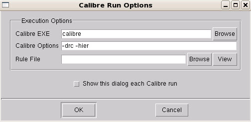

You can run the
Calibre RET batch tools from the Calibre WORKbench application.
Procedure
- In the Calibre WORKbench GUI,
open the design file () to run the
SVRF rule file on.
- In the RET Flow Tool (),
load the setup file ().
- In the Calibre WORKbench GUI,
select . The Calibre Run Options window appears
as shown in the figure.
Figure 1. Calibre Run Options
Click
the Browse button next to the Rule File field,
then browse and select an SVRF rule file.
- In the
Calibre EXE field, type in the Calibre nmDRC invocation and any
desired command-line switches in the Calibre Options field. (Note
that the area of the layout you select is passed in as a flat design,
so the output is also flat.)